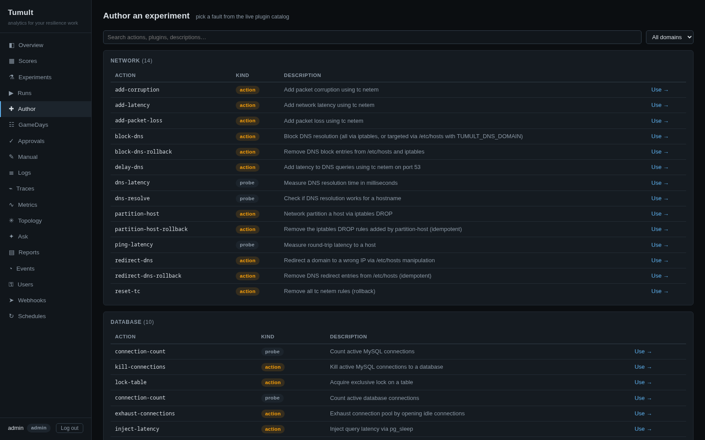
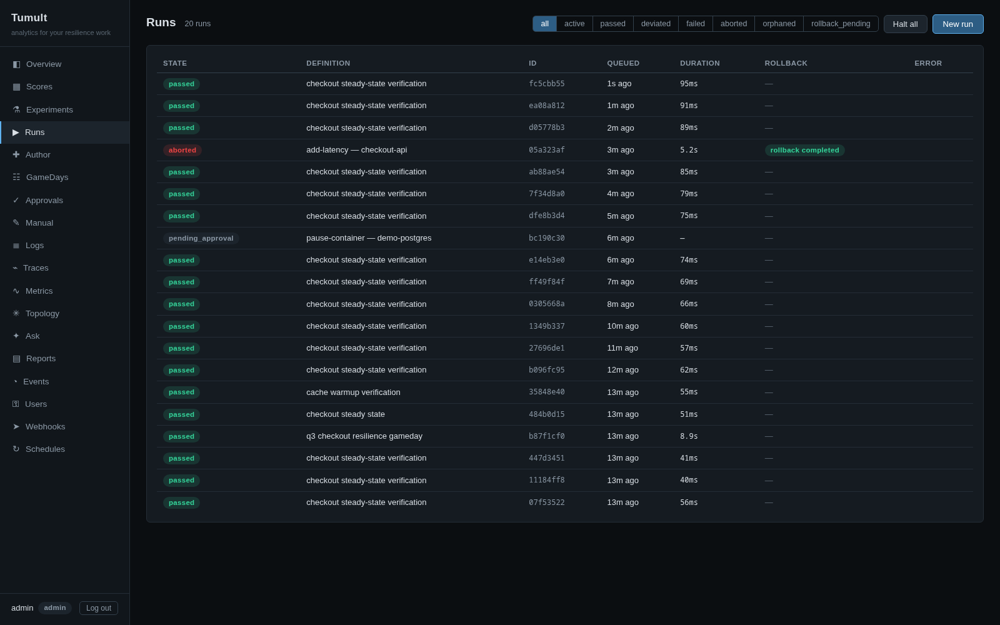
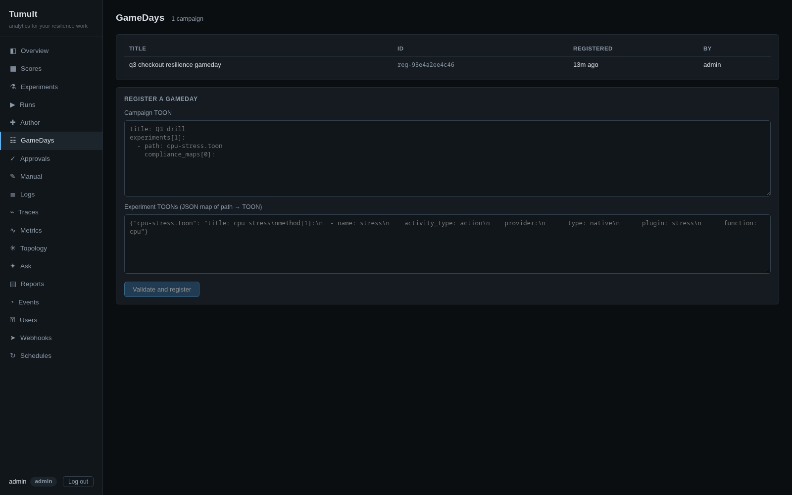

Author & run
Web UI Authoring & CLI
Pick a fault from the live plugin catalog and the Author wizard scaffolds validated TOON — one click into a registered, runnable definition. Or write TOON by hand and run it from one static binary: 16 plugins, 91 chaos actions across PostgreSQL, MySQL, Redis, Kafka, Docker, Podman, Pumba network chaos, Kubernetes, SSH, and CPU/memory/IO stress.
Govern
Approvals, E-Stop & Audit
Every run is classified into a risk tier (T0–T3) at request time. Gated runs wait behind a hash-pinned, quorum- and TTL-bound approval with segregation of duties — the requester can never approve their own run. A two-step e-stop and a stop-all kill switch halt anything mid-method, and every action lands in a hash-chained, tamper-evident audit trail.
Store & explore
Kronika Lake & Analytics
The daemon (tumultd) ingests OTLP traces, metrics, and logs around the clock into an embedded DuckDB store — Kronika — then serves the web UI from the same binary. KPIs, experiment history, log/trace/metric explorers, per-domain score rollups, parquet export. Or just ask a question in plain language over the store.
Prove it
Reports & Compliance
Map experiments to DORA (EU 2022/2554), NIS2, PCI-DSS 4.0, ISO 22301, ISO 27001, SOC 2, and Basel III via tumult compliance. R1 executive digests and R3 game-day reports sit on top of any run; the R2 evidence pack renders for DORA, NIS2, ISO 27001, and SOC 2 — PCI-DSS 4.0, ISO 22301, and Basel III are mapping-only. All as A4 PDFs with document control and hash-chain verification.
Close the loop
MCP Server & Agents
40 MCP tools over stdio or Streamable HTTP, with tool annotations, structured output schemas, and tumult:// resources. Any MCP-compatible agent can discover plugins, run experiments, query the analytics lake, and recommend what to test next — and Tumult can inject faults into agentic AI systems themselves.
Single Binary
One static binary — no Python, no runtime dependencies. The daemon embeds the lake, the schedulers, and the web UI in a single tumultd; the CLI is another. Pre-built for macOS (x86_64/aarch64) and Linux (x86_64 gnu/musl, aarch64 musl).
Native OpenTelemetry
Every experiment emits real OTel spans across SSH, Kubernetes, plugins, baselines, analytics, and MCP dispatch. Traces show up in Jaeger, SigNoz, or any OTLP backend — no configuration.
Memory Safe
Safe Rust across all 32 crates, with exactly two audited unsafe blocks for process-group kills. Zero production .unwrap(). Clippy pedantic enforced. cargo-audit on every commit.
GameDay Orchestration
Coordinated campaigns of experiments with shared load, resilience scoring, and compliance article mapping. One command: 4 experiments, DORA/NIS2 evidence, audit-ready journal.
Docker Images
Pre-built on GHCR — no Rust toolchain needed. docker pull ghcr.io/mwigge/tumult. Composable bundles: infra, observability, MCP server, agent fleet. Full e2e in one command.
SigNoz Observability
OTel Collector (contrib) with OTLP + Arrow receivers, span-to-metrics APM, host metrics, Prometheus. Traces flow to SigNoz — dashboards, alerting, log aggregation. No custom build needed.

OverviewResilience posture at a glance: hypothesis pass rate, deviation rate, experiments per day, fault breakdown — computed from the store, per window.

Catalog-driven authoringEvery fault and probe from the live plugin catalog, searchable and documented — pick one and the wizard scaffolds a validated experiment.

Approval workflowsRisk-tiered runs (T0–T3) park behind a quorum with content-hash pinning and segregation of duties — the requester can never approve their own run.

Stop-all kill switchState filters over the run queue, and a two-click Halt all that stops every active run and unwinds rollbacks — with the actor in the audit trail.

Run detailLive telemetry waterfall, the consumed approval chain with the approver's note, and a tamper-evident hash-chained audit trail — one page, whole story.

Two-step e-stopStop a run mid-method: the fault span halts, rollbacks unwind to a clean state, and the stop joins the audit trail with its actor.

GameDaysCoordinated campaigns registered from campaign TOON, executed under the same guardrails, scored and mapped to compliance articles.

Evidence packsR1/R2/R3 compliance reports generated from the store as document-controlled PDFs — the R2 pack includes the approval chain (SOC 2 CC8.1).